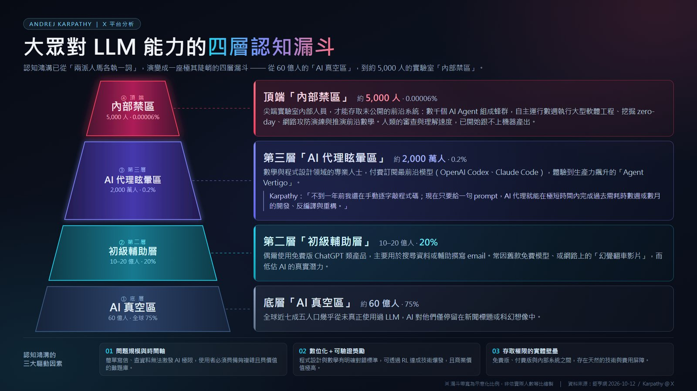

← 回 AI 研究入口
AI 產業觀察 · 新聞轉載摘要
Karpathy：四層認知漏斗，2000 萬人陷「AI 代理眩暈區」
2026-10-12 · 出處：鉅亨網（原文見下方連結，內文不轉載）
摘要
- Karpathy 指大眾對 LLM 能力的認知已從兩派對立，擴大成「四層認知漏斗」。
- 底層「AI 真空區」約 60 億人（75%）幾乎沒用過 LLM；第二層「初級輔助層」10–20 億人只用免費版做搜尋、寫信。
- 第三層「AI 代理眩暈區」約 2000 萬人（0.2%）：數理與程式專業者用 Codex、Claude Code 等前沿模型，生產力飆升到感到「Agent Vertigo」。
- 頂端「內部禁區」約 5000 人：尖端實驗室內部，數千 Agent 組蜂群自主跑數週，人類審查已跟不上。
- 三大驅動因素：問題規模與時間軸、數位化＋可驗證獎勵（RL 爆發）、存取權限的實體壁壘。
- 評論：你覺得 AI 強不強，取決於你站在漏斗哪一層——這正是 AI 討論兩極化的根源。

四層認知漏斗資訊圖（資料來源：鉅亨網 2026-10-12 / Karpathy @ X）
閱讀鉅亨網原文 →
本頁為 AI 摘要＋圖表存檔，僅供個人研究參考；完整報導以原文連結為準。